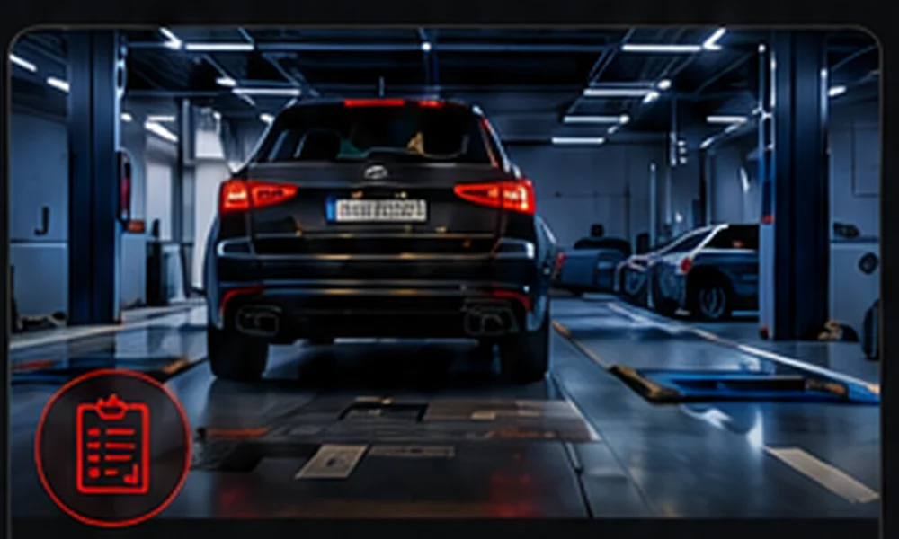
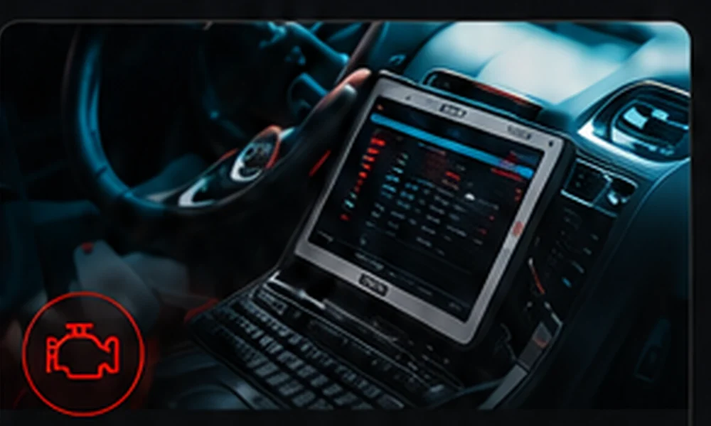
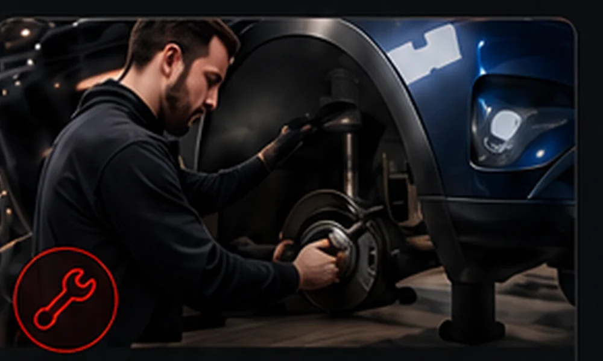

Badania techniczne
Kontrola stanu pojazdu oraz elementów wpływających na bezpieczeństwo i dopuszczenie do ruchu.
Sprawdź szczegóły →Badania techniczne, diagnostyka komputerowa i warsztat samochodowy. Sprawna obsługa przy ul. Festynowej 26A w Częstochowie.
Zdjęcie elewacji przedstawia wizualizację modernizacji obiektu.
IDZIAK SKP przy ul. Festynowej 26A wykonuje badania techniczne pojazdów i oferuje diagnostykę komputerową oraz obsługę warsztatową. Stacja jest czynna od poniedziałku do piątku 8:00–17:00 i w soboty 8:00–13:00.
Najważniejsze usługi w jednym miejscu: badanie techniczne, wykrywanie usterek i naprawa.

Kontrola stanu pojazdu oraz elementów wpływających na bezpieczeństwo i dopuszczenie do ruchu.
Sprawdź szczegóły →
Odczyt błędów, analiza parametrów i pomoc w ustaleniu przyczyny nieprawidłowej pracy pojazdu.
Sprawdź szczegóły →
Naprawy bieżące, układ hamulcowy, zawieszenie i przygotowanie samochodu do badania.
Sprawdź szczegóły →Stacja kontroli pojazdów, diagnostyka i warsztat pod jednym adresem.
Urządzenia diagnostyczne wspierające dokładną ocenę pojazdu.
Kontakt telefoniczny i WhatsApp przed przyjazdem.
Czynne w dni robocze oraz w sobotę.
Festynowa 26A w Częstochowie.
Obsługujemy kierowców z Częstochowy i okolicznych miejscowości. Przed przyjazdem można zadzwonić lub napisać przez WhatsApp.
Od poniedziałku do piątku 8:00–17:00, a w sobotę 8:00–13:00.
Przy ul. Festynowej 26A, 42-280 Częstochowa.
Tak. Numer telefonu i WhatsApp to 509 736 253.
Tak. Oferujemy odczyt błędów i analizę parametrów pojazdu.
Adres:
ul. Festynowa 26A
42-280 Częstochowa
Telefon:
509 736 253
E-mail:
idziak@list.pl
Godziny:
Pon.–Pt. 8:00–17:00
Sobota 8:00–13:00